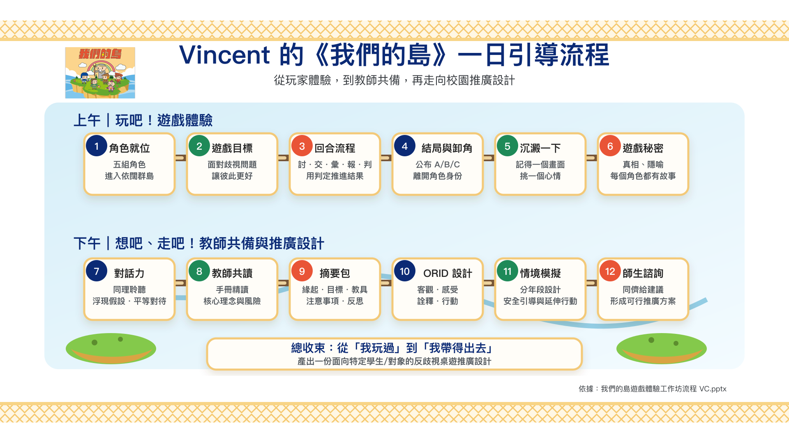
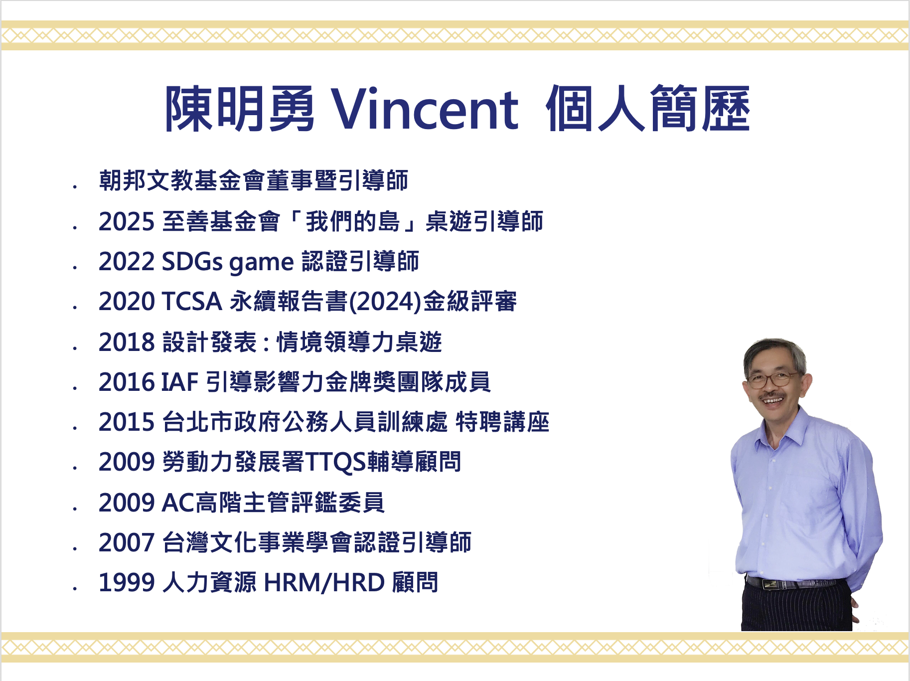

引導師個人共學分享
讓我們從對話開始，慢慢消弭各角落的霸凌
這兩年，我們在校園、職場與社會各處，看見不少令人憂心的霸凌事件。也因此，我更珍惜參與至善基金會推廣《我們的島》反歧視桌遊的經驗。
我希望把這份學習整理出來，透過「同理聆聽、浮現假設、平等對待」的對話練習，陪伴更多人看見歧視與霸凌如何發生，也一起練習如何修復關係、重新搭起理解的橋。
期待能與更多老師、社工，以及關心這個議題的公民一起共學，把桌遊中的體驗轉化為日常行動，促進更溫暖而正向的社會改變。
本頁非至善基金會官方網站，亦非官方授權教材頁。內容僅作為引導師個人共學分享；相關桌遊與原始素材引用自至善基金會《我們的島》桌遊素材。
Facilitation Flow
Vincent 的一日引導流程
這張圖整理一天工作坊從「玩家體驗」到「教師共備與推廣設計」的完整節奏，讓老師先看見整體學習路徑，再選擇自己回到校園後的第一步。

Source Note
引用與身份聲明
素材來源
本共學頁與技能包整理，引用自至善基金會《我們的島》桌遊素材與工作坊學習脈絡。
分享身份
本頁由引導師 Vincent 個人整理與分享，不代表至善基金會官方立場或正式授權版本。
Skill Pack
技能包下載
給老師帶回校園的不是厚資料，而是一組可以降低推廣阻力的個人共學工具。
完整下載 v1.0
包含三種推廣版本、一頁式設計單、開場話術、學生版與師長版情境卡、ORID 題庫、情緒地圖、事件後修復檢核。
Learning Path
老師共學路徑
從早上的玩家體驗，走到下午的教學設計，最後回到校園進行第一次試行。
親自體驗
進入角色、經歷衝突、看見橋如何斷裂或連起來。
設計反思
用 ORID、情緒地圖與校園情境，設計適合學生的討論。
回到現場
選擇低門檻版本，完成第一次推廣，並記錄學生反應。
Campus Scenes
校園情境與風險演練
歧視不只發生在學生玩笑裡，也可能出現在師長善意、制度安排與事件後處理中。
一句玩笑造成傷害
練習從「我只是開玩笑」轉向「這句話造成了什麼影響」。
善意稱讚背後的刻板印象
看見族群、性別、能力、外貌被固定成單一期待。
師長或制度造成的排除
辨識公開點名、性別分工、費用門檻與差別期待。
事件後副作用與修復
從受傷者、造成傷害者、旁觀者與班級規則三層修復。
Feedback
推廣回饋與案例共學
老師的現場經驗，是下一版技能包最重要的材料。
Facilitator
引導師簡介

陳明勇 Vincent
朝邦文教基金會董事暨引導師，2025 至善基金會「我們的島」桌遊引導師。長期投入引導、情境領導力桌遊、永續與組織學習相關工作。
- 2022 SDGs game 認證引導師
- 2020 TCSA 永續報告書金級評審
- 2018 設計發表・情境領導力桌遊
- 2016 IAF 引導影響力金牌獎團隊成員